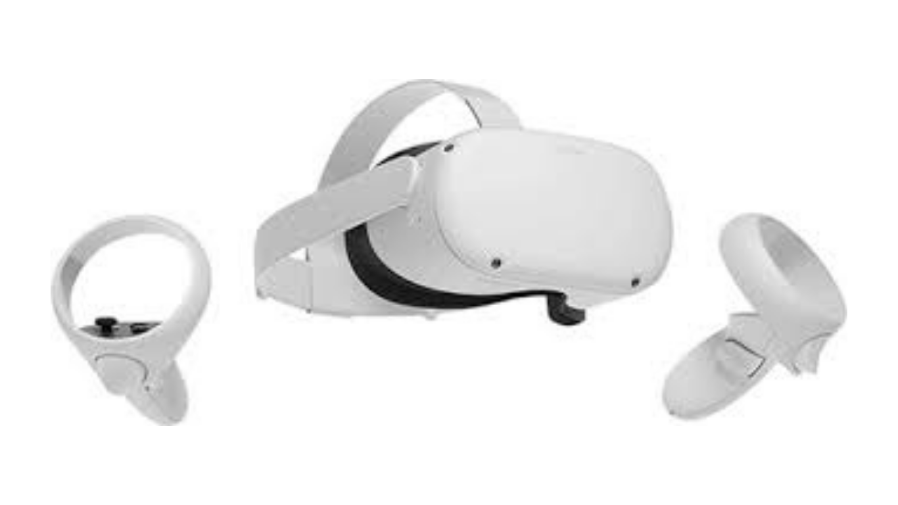

Como jugar
Para jugar Five Nights at Freddy's (FNAF), debes sobrevivir desde la medianoche (12 AM) hasta las 6 AM en tu oficina, gestionando energía limitada para luces, puertas y cámaras sin que los animatrónicos te atrapen. La clave es escuchar sonidos, revisar cámaras estratégicamente y usar luces para ahuyentarlos, con dificultad creciente cada noche.
Conceptos basicos
- Gestión de Energía: No consumas toda la energía eléctrica antes de las 6 AM, o las defensas fallarán y morirás.
- Monitoreo: Usa las cámaras para rastrear el movimiento de los animatrónicos, especialmente a Freddy y Foxy, sin abusar de ellas para ahorrar energía.
- Puertas y Luces: En FNAF 1, usa luces para ver si hay alguien en la puerta y ciérrala si es necesario, pero solo por poco tiempo para no gastar energía.
- Máscara (FNAF 2): Ponte la máscara rápidamente cuando un animatrónico entre en la oficina.
- Caja de Música (FNAF 2): Mantén la caja de música de Puppet cargada constantemente en la cámara 11, o será fin del juego.
- Sonido (FNAF 4): Escucha las respiraciones en las puertas y usa la linterna para alejar a los animatrónicos en el armario o la cama.
- Estrategia: La paciencia y la reacción rápida a los patrones de movimiento son esenciales. Los niveles avanzados requieren memorizar cuándo aparecen.
Mapa y ubicación de animatrónicos
LINK AQUI
Plataformas disponibles
Está disponible en varias plataformas:
- PC / Mac: a través de Steam y otras tiendas digitales.
- Consolas: PlayStation 4, PlayStation 5, Xbox One, Xbox Series X/S y Nintendo Switch.
- Dispositivos móviles*: iOS y Android mediante sus tiendas oficiales.
- Realidad virtual (VR), títulos comoFive Nights at Freddy's: Help Wanted* están disponibles para Oculus Rift, Oculus Quest, HTC Vive y PlayStation VR.
